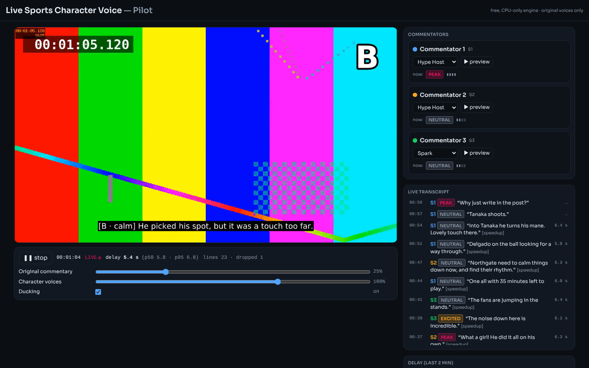
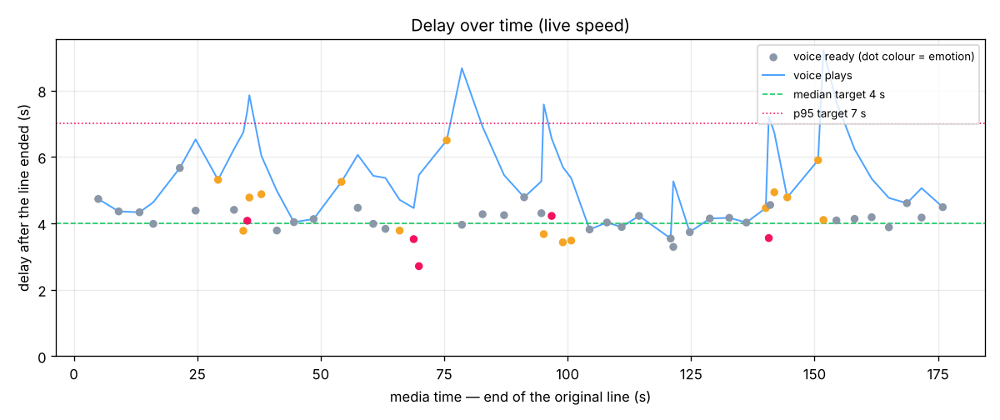

Press start. Each commentator is re-spoken in the character voice you choose, with the emotion of the moment, while the crowd keeps going. Change a voice while the match plays and the next line uses it.


The engine's own mixes, with the voices it used live.
This page plays voices the engine generated in advance. The full app listens and generates in real time, so it needs your computer. Install Homebrew first, then in Terminal:
git clone -b claude/nice-ritchie-5s42u6 https://github.com/manish12323423546/sd.git cd sd/live-character-voice make setup make download-models make synth make serveThen open http://localhost:8000 in your browser (not in Terminal). The first setup downloads about 2 GB.
Free, open-source stack: faster-whisper, SpeechBrain ECAPA, Kokoro-82M, Silero VAD. Voices are Kokoro's built-in voices under invented names; no real person or known character is imitated. The match, teams and players are synthetic.